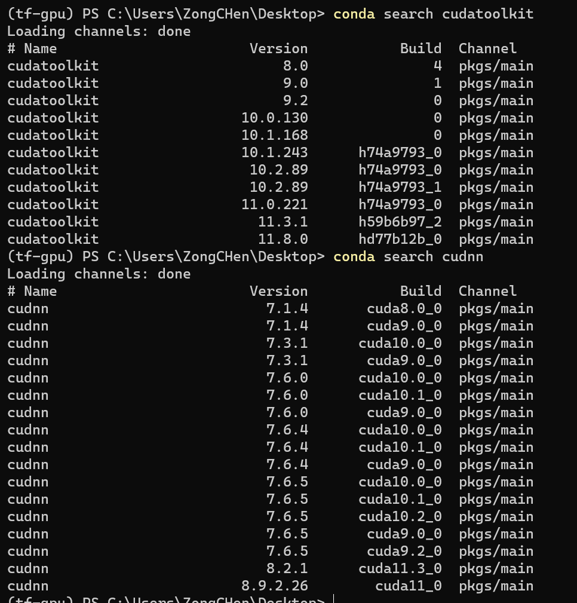
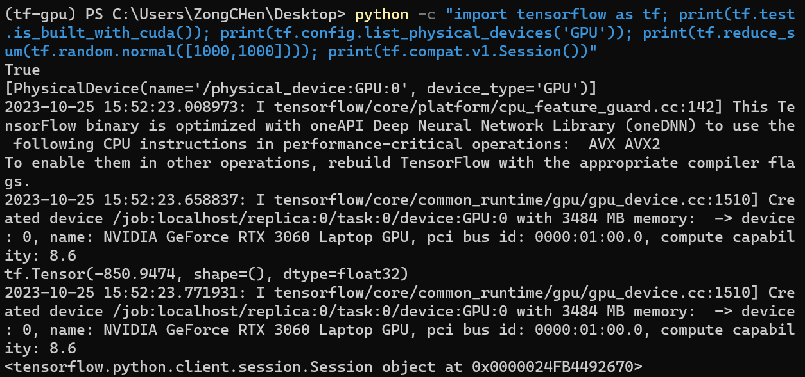

准备工作- TensorFlow 和其他工具软件包
TensorFlow
TensorFlow是一个开源软件库，用于各种感知和语言理解任务的机器学习。目前被50个团队用于研究和生产许多Google商业产品，如语音识别、Gmail、Google 相册和搜索，其中许多产品曾使用过其前任软件DistBelief。 TensorFlow最初由谷歌大脑团队开发，用于Google的研究和生产，于2015年11月9日在Apache 2.0开源许可证下发布。
Official Website | GitHub
Setup
跟随以下步骤，在2023年10月25日，Windows11 系统下安装TensorFlow 2.6.0版本。
我的电脑配置:
CPU: AMD Ryzen 9 6900HX with Readon Graphic @3.3GHz
GPU0: NVIDIA GeForce RTX 3060 Laptop
GPU1: AMD Radeon Graphic 680M
RAM: 32GB Samsung DDR5 BDie 5000Mit/s
SSD: 1TB Micron 3400 PCIe4.0 NVMe SSD
WLan: Intel AX210 802.11ax WiFi 6E
Lan: RealTek Semiconductor RTL8125 Gaming 2.5GbE Family Ethernet Controller
说明
很多教程都喜欢在实体环境下安装，这样是不好的，官方的文档也不推荐这样做。🤣
所以我们使用 conda 创建一个虚拟环境，然后在虚拟环境中安装 TensorFlow。“Wink😉”
使用 Miniconda 就可以了， CUDA Toolkit 和 cuDNN 也可以在虚拟环境中安装，实体环境中可以忽略。
需要提前下载的文件：
Anaconda
CUDA Toolkit
cuDNN
CUDA Toolkit
在官网下载最新版本的 CUDA Toolkit(cuda_12.3.0_545.84_windows)。
不必担心兼容性问题，CUDA 是向下兼容的，即新版本的 CUDA 可以运行旧版本的 cuDNN。
安装 CUDA Toolkit，选择安装路径，点击“Install”按钮。
等待安装完成，点击“Finish”按钮。
cuDNN
把下载好的 cuDNN(cudnn-windows-x86_64-8.9.4.25_cuda12-archive) 压缩包解压到 CUDA Toolkit 的安装路径下。
Python Environment: Anaconda
打开 Anaconda 官网，下载最新版本的 Anaconda(Anaconda3-2023.09-0-Windows-x86_64)。
安装 Anaconda，选择安装路径，勾选“Add Anaconda to my PATH environment variable”，点击“Install”按钮。
等待安装完成，点击“Next”按钮。
Create a new environment
打开 Anaconda Prompt，创建一个新的环境。
1 | conda create -n tf-gpu python=3.9 |
激活新环境。
1 | conda env list # 查看所有环境 |
Install cuda toolkit and cudnn
先寻找
cuda toolkit和cudnn
1 | conda search cudatoolkit |
这里我们选择安装 cudatoolkit==11.3.1 和 cudnn==8.2.1
注意版本号
注意：cudatoolkit 和 cudnn 的版本要对应，且与 tensorflow-gpu 的版本对应，否则会报错。
参考：Tested build configurations
并不需要完全一致，但最好是一致的。参考下图，
cudatoolkit==11.3.1和cudnn==8.2.1，cudnn==8.2.1其实对应的是cudatoolkit==11.3.0，但是也可以运行。

安装
cudatoolkit和cudnn
1 | conda install cudatoolkit==11.3.1 |
最好按照上面的顺序安装。（因为我觉得 cudnn 依赖于 cudatoolkit）🫠
Install tensorflow-gpu
安装
tensorflow-gpu
1 | pip install tensorflow-gpu==2.6.0 |
2. 测试
不用测试了，一定会报错的。😅
因为依赖的 numpy 与 protobuf 的版本不对应。😡
1 | pip install numpy==1.19.5 |
测试
Test code
1 | python -c "import tensorflow as tf; print(tf.test.is_built_with_cuda()); print(tf.config.list_physical_devices('GPU')); print(tf.reduce_sum(tf.random.normal([1000,1000]))); print(tf.compat.v1.Session())" |

结果提示：True，说明安装成功。❤️
并且识别到了 Nvdia 独立显卡。🎉
10月25日更新
后来，我需要安装 pytroch，因为是 conda 环境，所以直接conda安装就好了。
1 | conda install pytorch torchvision torchaudio pytorch-cuda=12.1 -c pytorch -c nvidia |
1 | conda install pytorch=2.4.1 torchvision=0.19.1 torchaudio=2.4.1 pytorch-cuda=12.1 -c pytorch -c nvidia |
这条命令我没有测试，当时是直接安装的最新版本。现在重新配了环境，现在的最新版与当时不同了，可能会有一些出入，但是基本上是这样的。现在的版本对应下面的表格。
| Name | Version |
|---|---|
| pytorch | 2.4.1 |
| torchvision | 0.19.1 |
| torchaudio | 2.4.1 |
但是会有兼容性问题，所以需要安装 numpy==1.20.0。
1 | pip install numpy==1.22.0 |
之后，测试一下。
1 | python -c "import torch; print(torch.__version__); print(torch.cuda.is_available()); print(torch.backends.cudnn.m.is_available()); print(torch.rand(5, 3))" |
10月28日更新
需要使用到 matplotlib，所以安装一下。
1 | conda install matplotlib==3.3.4 |
这个版本没有出现兼容性问题。
以及 opencv。
1 | conda install opencv==4.6.0 |
如果运行程序提示错误，很可能是 numpy 的版本问题，可以尝试重装 numpy==1.20.0。
1 | pip uninstall numpy |
numpy 这小子真是个麻烦的家伙。😅
随后进行测试。
1 | python -c "import matplotlib; print(matplotlib.__version__); import cv2; print(cv2.__version__)" |
具体功能测试
matplotlib
1 | import matplotlib.pyplot as plt |
opencv
1 | import cv2 |
然后，我们发现 opencv 报错了。
提示 The function is not implemented. Rebuild the library with……
解决方法：
1 | pip install opencv-contrib-python==4.8.1.78 |
参考
TensorFlow 官方文档
Anaconda Install TensorFlow
Tested build configurations
使用 Gpu
Install TensorFlow with pip
十分钟安装TensorFlow-GPU
24 年 10 月 15 日 更新
如果遇到
AttributeError: module ‘numpy.typing’ has no attribute ‘NDArray’
TypeError: ‘numpy._DTypeMeta’ object is not subscriptable
etc.
报错，可以尝试升级 numpy。
这个环境配置中绝大部分问题都是由于 numpy 引起的。
如果遇到 dll 缺失的问题，就在虚拟环境中搜索相关的 dll 文件，然后复制到系统目录 C:\Windows\System 下即可（大概率是 CUDA 问题，懒得去动）
1 | pip uninstall numpy |
其中
1.xx是你想要安装的版本号。要自己尝试那个是可用的，不然会报错。我从1.17.0尝试到1.22.0，就没有报错了。
测试指令：
cuda
1 | nvcc --version |
tensorflow-gpu
1 | python -c "import tensorflow as tf; print(tf.test.is_built_with_cuda()); print(tf.config.list_physical_devices('GPU')); print(tf.reduce_sum(tf.random.normal([1000,1000]))); print(tf.compat.v1.Session())" |
pytorch
1 | python -c "import torch; print(torch.__version__); print(torch.cuda.is_available()); print(torch.backends.cudnn.m.is_available()); print(torch.rand(5, 3))" |
matplotlib
1 | python -c "import matplotlib; print(matplotlib.__version__)" |
opencv
1 | python -c "import cv2; print(cv2.__version__)" |
完成后一看，这环境真大，好多东西。😅 11.2 GB (12,072,464,651 字节)
当前环境包列表
当前系统环境如下：
| Name | Version |
|---|---|
| python | 3.9.13 |
| conda | 24.7.1 |
| Windows | 11 Pro 23H2(OS Build 22631.4317) |
| NVida Graphic Driver | 565.90 |
| Readon Graphic Driver | 22.40.84.06 |
使用 requirements.txt 以及 requirements.yml
requirements.txt 是 pip 的包管理文件，requirements.yaml 是 conda 的包管理文件。
通过这两个文件，可以快速安装环境。
1 | pip install -r requirements.txt |
1 | conda env create -f requirements.yaml |
25年4月13日
又安装了 scikit-learn scikit_learn-1.6.1
1 | pip install scikit-learn==1.6.1 |
又要解决该死的 numpy 版本问题了。
1 | pip install numpy==1.23.0 |
25年4月25日
今天要用 TensorFlow 进行模型训练和测试。结果报错
1 | ImportError: cannot import name 'dtensor' from 'tensorflow.compat.v2.experimental' |
解决方法：
1 | pip install keras==2.6 |
又要用到 seaborn
1 | pip install seaborn==0.13.2 |
以及 tqdm
1 | pip install tqdm==4.67.1 |